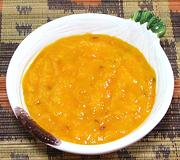

|
Sweet Mango ChutneyEast Africa, Tanzania - Achali ya Embe Mbivu | ||||
| Makes: Effort: Sched: DoAhead: |
2 cup ** 30 min Yes |
This fruity chutney with low chili heat can be used as a dip with Vegetables, or with Snacks and Meats. | |||
|
2 1 1 1/4 1/2 1/2 1 2 1 |
in c t t t T |
Mango, ripe (1) Ginger root Habaneros (2) Lime Juice Cumin Seed Sea Salt Sugar Olive Oil ExtV Kaffir Leaf (3) |
Make - (20 min)
|